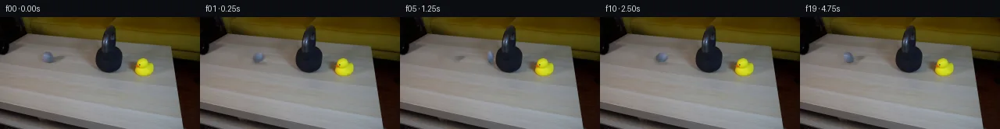

![首帧]()

Round 00
2026-11-05T15:20:37.368640+00:00像素候选变化代码 +204/−0inspection 更新
pixels 01065d21a61e9eec · code 714273e27099526d
查看本轮 generate.py 真实 diff
--- previous/generate.py
+++ current/generate.py
@@ -0,0 +1,204 @@
+#!/usr/bin/env python3
+"""Generate the 20-frame locked-camera tennis-ball collision sequence."""
+
+from pathlib import Path
+
+import cv2
+import numpy as np
+from PIL import Image, ImageDraw
+
+import artifact_io
+
+
+ROOT = Path(__file__).resolve().parent
+W, H = 256, 144
+BALL_CENTER = np.array([62.0, 52.0], dtype=np.float32)
+PATCH_RADIUS = 12
+
+
+def read_source() -> np.ndarray:
+ source = np.asarray(Image.open(ROOT / "first_frame.png").convert("RGB"))
+ assert source.shape == (H, W, 3) and source.dtype == np.uint8
+ return source
+
+
+def make_clean_plate(source: np.ndarray) -> np.ndarray:
+ """Remove the initial ball and its small contact shadow from the tabletop."""
+ mask = np.zeros((H, W), np.uint8)
+ # The broad ellipse includes the anti-aliased ball boundary and its darkest
+ # contact pixels, but does not touch the pipe or any other named object.
+ cv2.ellipse(mask, (62, 52), (11, 10), 0, 0, 360, 255, -1, cv2.LINE_AA)
+ cv2.ellipse(mask, (64, 59), (8, 3), 0, 0, 360, 255, -1, cv2.LINE_AA)
+ clean = cv2.inpaint(source, (mask > 20).astype(np.uint8) * 255, 5, cv2.INPAINT_TELEA)
+
+ # Reintroduce a little deterministic tabletop grain so the repaired area
+ # has the same small-scale variation as the surrounding real pixels.
+ repaired = mask > 10
+ donor = np.roll(source, 24, axis=1)
+ residual = donor.astype(np.int16) - cv2.GaussianBlur(donor, (0, 0), 1.4).astype(np.int16)
+ clean16 = clean.astype(np.int16)
+ clean16[repaired] += (residual[repaired] * 0.32).astype(np.int16)
+ return np.clip(clean16, 0, 255).astype(np.uint8)
+
+
+def extract_ball_sprite(source: np.ndarray) -> tuple[np.ndarray, np.ndarray]:
+ """Extract the real ball RGB and a soft circular alpha matte."""
+ cx, cy = BALL_CENTER.astype(int)
+ r = PATCH_RADIUS
+ rgb = source[cy - r : cy + r + 1, cx - r : cx + r + 1].copy()
+ yy, xx = np.mgrid[-r : r + 1, -r : r + 1].astype(np.float32)
+
+ # The observed cool-gray object spans about x=54..69, y=44..59.
+ # A slightly asymmetric ellipse tracks its photographed silhouette.
+ dist = np.sqrt((xx / 8.7) ** 2 + ((yy + 0.2) / 8.2) ** 2)
+ alpha = np.clip((1.08 - dist) / 0.18, 0.0, 1.0)
+
+ # Avoid bringing tabletop-colored corners along with the moving cutout.
+ cool = (rgb[..., 2].astype(np.float32) - rgb[..., 0].astype(np.float32))
+ chroma_support = np.clip((cool + 4.0) / 15.0, 0.15, 1.0)
+ alpha *= np.where(dist < 0.78, 1.0, chroma_support)
+ return rgb.astype(np.float32), alpha.astype(np.float32)
+
+
+def transform_sprite(
+ rgb: np.ndarray,
+ alpha: np.ndarray,
+ angle_degrees: float,
+ scale_x: float,
+ scale_y: float,
+ blur_amount: float,
+) -> tuple[np.ndarray, np.ndarray]:
+ """Rotate, deform, and apply a restrained horizontal exposure blur."""
+ n = rgb.shape[0]
+ c = (n - 1) / 2.0
+ matrix = cv2.getRotationMatrix2D((c, c), angle_degrees, 1.0)
+ rot_rgb = cv2.warpAffine(
+ rgb, matrix, (n, n), flags=cv2.INTER_CUBIC, borderMode=cv2.BORDER_REFLECT_101
+ )
+ rot_alpha = cv2.warpAffine(
+ alpha, matrix, (n, n), flags=cv2.INTER_CUBIC, borderMode=cv2.BORDER_CONSTANT
+ )
+
+ new_w = max(3, int(round(n * scale_x)))
+ new_h = max(3, int(round(n * scale_y)))
+ rot_rgb = cv2.resize(rot_rgb, (new_w, new_h), interpolation=cv2.INTER_CUBIC)
+ rot_alpha = cv2.resize(rot_alpha, (new_w, new_h), interpolation=cv2.INTER_CUBIC)
+
+ if blur_amount > 0.05:
… diff truncated; 117 more lines …